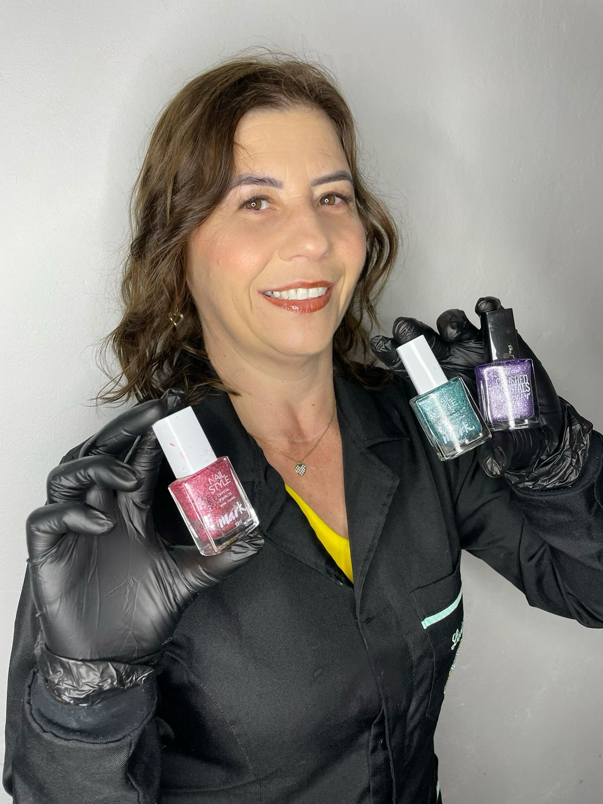
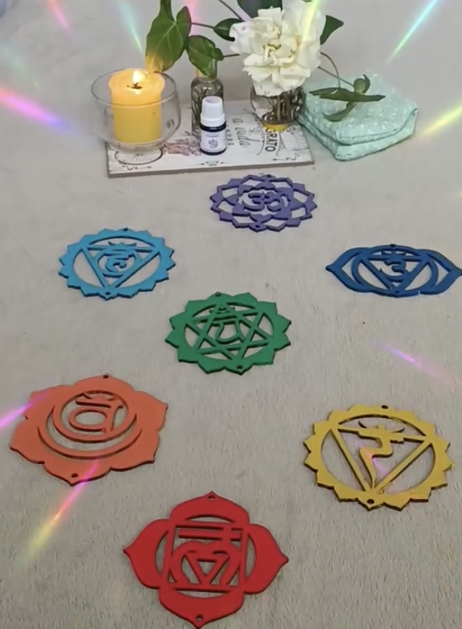

Prazer, para os intimos sou Chani!
Nasci dia 02 de agosto de 1973, tenho 2 filhas, e 2 gatinhas, trabalhei em mercado por mais de 30 anos, hoje realizo meu sonho de trabalhar com o que eu amo que é a transformação de mulheres, cuidando do bem fisíco e espiritual de cada cliente que eu tenho o prazer de atender
Estou me graduando na faculdade de Práticas integrativa e complementares em saúde, voltada totalmente a saúde emocional, espiritual e energética.
Tenho o studio como um lazer, um momento de autocuidado tanto para minhas clientes quanto para mim, hoje o meu trabalho é únicamente por prazer, isso que torna a energia do lugar onde atendo especial, sempre que estou lá estou entregue de corpo, mente e alma no que estou fazendo, cuidando unicamente de vocês!
